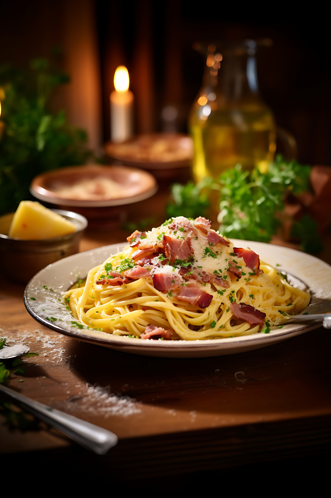

Your Profile
Name: Vishal Abishek G
Email: vishal@gmail.com
Bio: Food lover and street food enthusiast. Always on the lookout for the best eats!
Your Posts
Your Favorite Dishes
Pasta Primavera
Spicy Pizza

Chocolate Cake

Recent Activities
- Commented on The Best Dessert Places
- Liked Healthy Smoothie Recipes
- Shared a post about Street Food Festivals